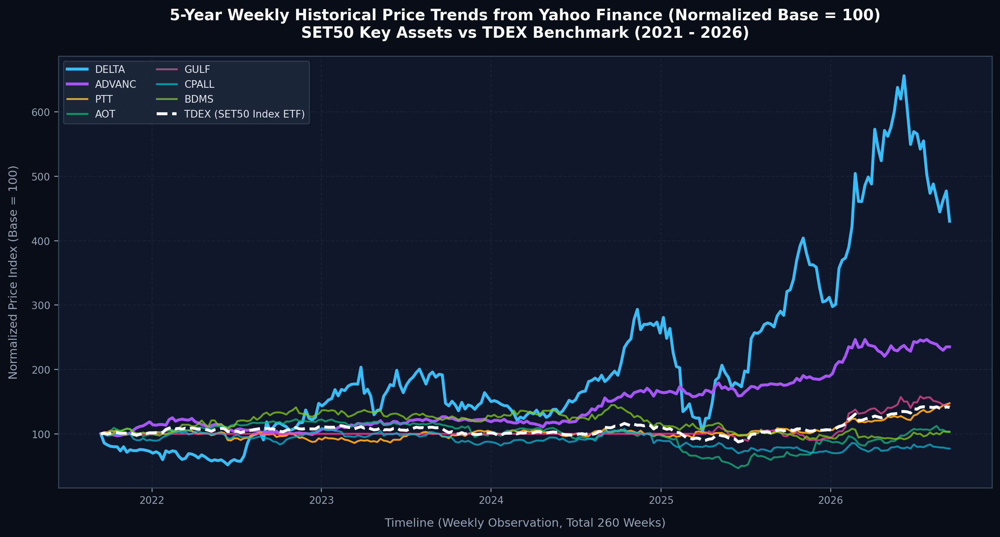
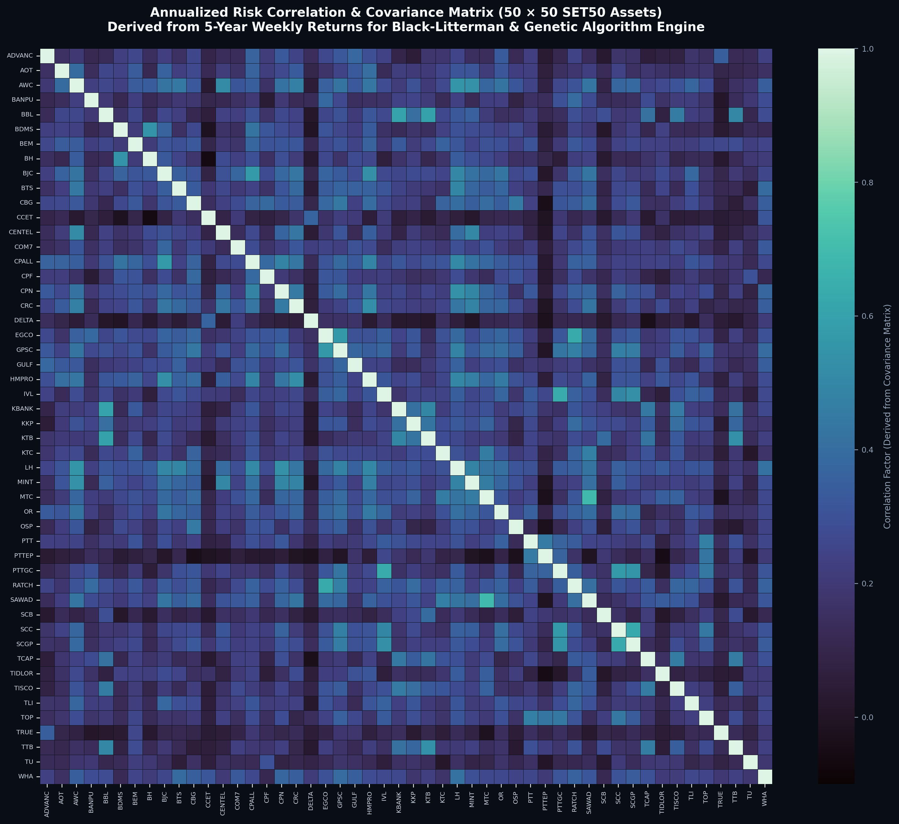
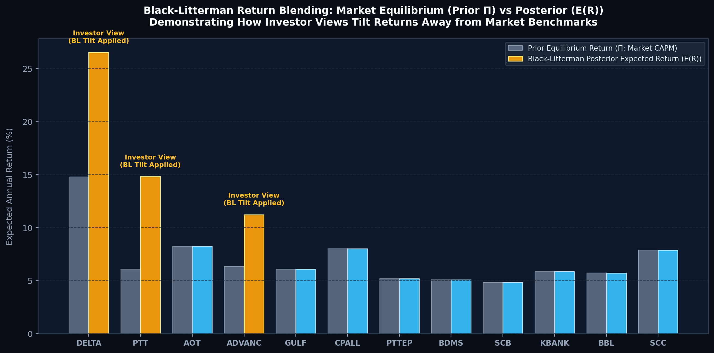
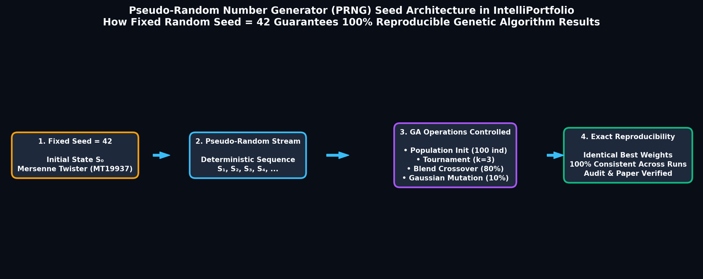

แจกแจงครบถ้วน 4 มิติ: (1) เครื่องมือและภาษา (2) แหล่งที่มาและความสัมพันธ์ของข้อมูล (3) วงจรการทำงานของ Genetic Algorithm และ (4) การแปลงผลลัพธ์สู่ Dashboard
ระบบนี้ถูกสร้างขึ้นด้วยสถาปัตยกรรมแบบ Modern Decoupled Full-Stack Architecture แยกส่วนระหว่างหน้าบ้าน (Frontend) และหลังบ้านประมวลผล (Backend) เพื่อประสิทธิภาพสูงสุด:
| Python 3.9+ | ภาษาหลักฝั่งหลังบ้าน (Backend) สำหรับการคำนวณสถิติ, Black-Litterman และ Genetic Algorithm |
| TypeScript | ภาษาหลักฝั่งหน้าบ้าน (Frontend Next.js) ที่มีระบบ Type-safe ป้องกันข้อผิดพลาดของข้อมูล |
| SQL (PostgreSQL) | ภาษาสำหรับจัดการฐานข้อมูลเชิงสัมพันธ์ ทั้ง Schema, Triggers, Views และ Foreign Keys |
| HTML5 / CSS3 | โครงสร้างหน้าเว็บและดีไซน์แบบ Glassmorphism Responsive รองรับทุกขนาดหน้าจอ |
| DEAP | เฟรมเวิร์กมาตรฐานระดับโลกสำหรับสร้าง Genetic Algorithm ควบคุม Selection, Crossover, Mutation |
| FastAPI | High-performance Python Web API Framework ทำงานแบบ Asynchronous รองรับการคำนวณหนัก |
| Next.js 14 (App Router) | React Framework ชั้นนำ จัดการ Routing, Server-Side Rendering และ UI Components |
| NumPy & Pandas | แกนหลักการคำนวณ Matrix, Covariance, Dot Product และ Time-series Data |
| PostgreSQL 15 | ระบบฐานข้อมูลหลักสำหรับจัดเก็บ Master Data, สิทธิ์ผู้ใช้งาน และประวัติพอร์ตการลงทุน |
| Redis 7 | In-memory Caching จัดเก็บเมทริกซ์ความเสี่ยงและค่า Beta 24 ชั่วโมง เพื่อลดเวลาประมวลผล |
| yfinance | API ดึงประวัติราคาปิดย้อนหลัง 5 ปี (Weekly 5Y) ของหุ้น SET50 จาก Yahoo Finance |
| Clerk Auth | ระบบรักษาความปลอดภัยและจัดการยืนยันตัวตนผู้ใช้ (Authentication & Authorization) |
ผ่านฐานข้อมูล PostgreSQL (ตาราง assets):
• รายชื่อหุ้นในกลุ่ม SET50 ทั้ง 50 ตัว
• หมวดหมู่อุตสาหกรรม (Sector เช่น Energy, Banking)
• มูลค่าหลักทรัพย์ตามราคาตลาด (Market Cap)
ข้อมูล Time-Series ย้อนหลัง 5 ปี:
• ราคาปิดปรับสิทธิ์ (Adjusted Close Price) รายสัปดาห์ (Weekly) จำนวน 260 สัปดาห์ ของหุ้น 50 ตัว
• ราคาปิดของกองทุนดัชนีตลาด TDEX.BK (Benchmark)
ผ่านหน้าเว็บวางแผนการลงทุน:
• งบประมาณเริ่มต้น, เป้าหมายเงินเก็บ, ระยะเวลา (ปี)
• ระดับความเสี่ยง Beta ที่ต้องการ (0.8, 1.0, 1.2)
• รายชื่อหุ้นที่ต้องการ "ล็อก" ไว้ในพอร์ต
• มุมมองผลตอบแทนส่วนตัว (Investor Views)

yfinance API โดยนำราคามา Normalize ปรับฐานเป็น 100 เพื่อแสดงแนวโน้มการเติบโตของหุ้น SET50 สำคัญ (เช่น DELTA, ADVANC, PTT, AOT, GULF, CPALL, BDMS) เปรียบเทียบกับดัชนีตลาด SET50 ETF (TDEX.BK เส้นประสีขาว)
exported_market_data/weekly_prices_5y.csv):
| Date | ADVANC | AOT | CPALL | DELTA | GULF | PTT | SCB | TDEX (Market) | ... รวม 50 ตัว |
|---|---|---|---|---|---|---|---|---|---|
| 2021-09-13 | 150.59 | 59.69 | 58.71 | 55.32 | 42.64 | 28.83 | 57.84 | 7.53 | ... |
| 2021-09-20 | 152.53 | 60.41 | 58.03 | 47.50 | 42.64 | 29.57 | 57.84 | 7.59 | ... |
| 2021-09-27 | 151.76 | 59.21 | 56.90 | 45.74 | 42.64 | 29.52 | 57.84 | 7.49 | ... |
| ... | ... | ... | ... | ... | ... | ... | ... | ... | ... |
| 2026-09-07 | 354.00 | 61.25 | 45.25 | 238.00 | 61.00 | 42.50 | 151.50 | 10.82 | ... |
flowchart TD
%% SUBGRAPH 1: INPUTS
subgraph S1 ["📥 ขั้นตอนที่ 1: เตรียมข้อมูลและรับพารามิเตอร์ (Data Gathering & User Inputs)"]
direction TB
U1["👤 ผู้ใช้งาน (User Inputs หน้าเว็บ)
• งบประมาณ, เป้าหมาย, ระยะเวลา
• ระดับความเสี่ยงเป้าหมาย (target_beta)
• จำนวนหุ้นสูงสุด (max_stocks)
• หุ้นล็อก (locked_stocks)
• มุมมองส่วนตัว (user_custom_views)"]
Y1["📈 Yahoo Finance API
• ราคาปิดย้อนหลัง 5 ปี (260 สัปดาห์)
• คำนวณ Weekly Returns
• เมทริกซ์ความเสี่ยง 50x50 (Σ)
• ค่าความเสี่ยงเทียบตลาด (Beta)"]
D1["🗄️ ฐานข้อมูล PostgreSQL
• รายชื่อหุ้น SET50 ที่ Active
• มูลค่าตลาด (Market Cap)
• หมวดหมู่อุตสาหกรรม (Sectors)"]
end
%% SUBGRAPH 2: BLACK-LITTERMAN
subgraph S2 ["🧠 ขั้นตอนที่ 2: แบบจำลอง Black-Litterman (คนออกข้อสอบ: คำนวณผลตอบแทนคาดหวัง)"]
direction TB
B1["1. คำนวณดุลยภาพตลาด (Prior: Π)
Π = δ · Σ · w_mkt (δ = 2.5)
(เป็นสมอเรืออ้างอิงจากโครงสร้างตลาดจริง)"]
B2["2. แปลงมุมมองผู้ใช้ (Views)
สร้างเมทริกซ์ P, เวกเตอร์ Q
และเมทริกซ์ความคลาดเคลื่อน Ω"]
B3["3. ทำ Bayesian Updating
E(R) = [(τΣ)⁻¹ + PᵀΩ⁻¹P]⁻¹ [(τΣ)⁻¹Π + PᵀΩ⁻¹Q]
(ผสานมุมมองผู้ใช้เข้ากับดุลยภาพตลาดอย่างสมดุล)"]
B1 --> B3
B2 --> B3
B_out["🎯 ผลลัพธ์จาก BL:
• เวกเตอร์ผลตอบแทนคาดหวังใหม่ E(R)
• เมทริกซ์ความเสี่ยงปรับปรุง (Σ_bl)"]
B3 --> B_out
end
%% SUBGRAPH 3: GENETIC ALGORITHM
subgraph S3 ["🧬 ขั้นตอนที่ 3: Genetic Algorithm (นักแก้โจทย์: เริ่มสร้างและค้นหาพอร์ตที่ดีที่สุด)"]
direction TB
G_in["📥 รับวัตถุดิบทั้งหมดเข้าสู่ GA Engine:
E(R), Σ_bl, Betas, target_beta, max_stocks, locked_stocks"]
G_seed["1. ล็อก Seed = 42 (ผลลัพธ์คงที่ ทำซ้ำได้ 100%)"]
G_pop["2. สุ่มสร้างประชากรรุ่นที่ 0 (Population = 100 พอร์ต)"]
G_loop["3. วงรอบวิวัฒนาการ 50 รุ่น (50 Generations):
• Blend Crossover (80%): ผสมน้ำหนัก BLX-0.5
• Gaussian Mutation (10%): สุ่มสั่นค่ายีนกันติดหลุม
• Evaluate: คิด Sharpe Ratio หักบทลงโทษ 3 ด่าน
• Tournament Selection (k=3): ประลองคัดตัวเก่ง
• Elitism: บันทึกแชมป์ใส่ตู้เซฟ Hall of Fame"]
G_polish["4. สกัดและปรับแต่งพอร์ตแชมป์ (Final Polish):
• กรองเหลือ max_stocks ตัว
• บังคับหุ้น locked มีน้ำหนักอย่างน้อย 5%
• ปรับผลรวมน้ำหนักให้ได้ 100.0% พอดี"]
G_in --> G_seed --> G_pop --> G_loop --> G_polish
end
%% SUBGRAPH 4: POST-PROCESSING
subgraph S4 ["📊 ขั้นตอนที่ 4: ประเมินผลและการแสดงผลลัพธ์ (Post-Processing & Dashboard)"]
direction TB
P1["1. ทดสอบย้อนหลังจริง (Historical Backtest)
เปรียบเทียบผลตอบแทนสะสมของพอร์ต AI
กับดัชนีตลาด SET50 ETF (TDEX.BK)"]
P2["2. คำนวณความน่าจะเป็นบรรลุเป้าหมาย (GBM)
ใช้สูตรมอนติคาร์โล & Error Function (erf)
พร้อมกรอบคาดการณ์มูลค่า ±1σ"]
P3["3. บันทึกลง PostgreSQL & เรนเดอร์บนเว็บ
แสดงกราฟ AreaChart, สัดส่วนพอร์ต และ Metrics บน Dashboard"]
end
%% CONNECTIONS BETWEEN STAGES
U1 --> B2
U1 -.->|"ส่งกติกา (target_beta, max_stocks, locked)"| G_in
Y1 -->|"Σ, Returns, Beta"| B1
Y1 -.->|"Σ, Beta"| G_in
D1 -->|"Market Cap, Tickers"| B1
B_out ==>|"ส่งโจทย์ผลตอบแทน E(R) และความเสี่ยง Σ"| G_in
G_polish ==>|"พอร์ตแชมป์ที่ดีที่สุด (Optimal Weights)"| P1
G_polish ==>|"สัดส่วนพอร์ต (Weights)"| P2
P1 --> P3
P2 --> P3
| ลำดับ | ข้อมูลตั้งต้น | กระบวนการแปลง / คำนวณ | ผลลัพธ์ที่ได้ | นำไปทำอะไรต่อ? |
|---|---|---|---|---|
| ขั้นที่ 1 | ราคาปิดรายสัปดาห์ 5 ปี (\(P_t, P_{t-1}\)) จาก Yahoo | สูตร Percentage Change: \(R_{i,t} = (P_{i,t} - P_{i,t-1})/P_{i,t-1}\) |
ผลตอบแทนรายสัปดาห์ (Weekly Returns) | ส่งต่อไปคำนวณ Covariance Matrix และ Beta |
| ขั้นที่ 2 | Weekly Returns หุ้น 50 ตัว | คูณความแปรปรวนร่วมด้วย 52 สัปดาห์: \(\Sigma = \text{Cov}(R) \times 52\) |
Covariance Matrix (\(\Sigma\)) ขนาด \(50 \times 50\) | ใช้ประเมินความเสี่ยงพอร์ตใน GA และใช้ใน Black-Litterman |
| ขั้นที่ 3 | Weekly Returns หุ้น เทียบกับ TDEX |
สูตร: \(\beta_i = \text{Cov}(R_i, R_m)/\text{Var}(R_m)\) |
ค่าความเสี่ยงเฉพาะตัว (Beta: \(\beta_i\)) | ใช้คำนวณ Beta รวมของพอร์ต และใช้ลงโทษใน Beta Penalty |
| ขั้นที่ 4 | Market Cap หุ้น 50 ตัว จาก Database | หารด้วยผลรวมมูลค่าตลาดทั้งหมด: \(w_{mkt, i} = \text{Cap}_i / \sum \text{Cap}_j\) |
สัดส่วนน้ำหนักตลาด (\(w_{mkt}\)) | ใช้คำนวณดุลยภาพตลาดในสมการ Reverse Optimization |
| ขั้นที่ 5 | \(w_{mkt}\), \(\Sigma\) และค่า \(\delta = 2.5\) | Reverse Optimization: \(\Pi = \delta \cdot \Sigma \cdot w_{mkt}\) |
ผลตอบแทนดุลยภาพตลาด (Prior: \(\Pi\)) | เป็นฐานผลตอบแทนตั้งต้นที่ตลาดคาดหวัง ป้องกันพอร์ตสุดโต่ง |
| ขั้นที่ 6 | \(\Pi\), \(\Sigma\), \(\tau = 0.05\) + มุมมองผู้ใช้ (\(P, Q, \Omega\)) | Bayesian Updating (Black-Litterman Formula) | ผลตอบแทนคาดหวังใหม่ \(E(R)\) และ \(\Sigma_{bl}\) | ส่งเข้าเป็นตัวแปรหลักใน GA Fitness Function! |
แจกแจงสมการคณิตศาสตร์ที่ใช้ในแต่ละขั้นตอน พร้อมนิยามตัวแปรทุกตัวเป็นภาษาอังกฤษและคำแปลภาษาไทยอย่างละเอียด โดยตัวแปรที่ปรากฏซ้ำในขั้นตอนถัดไปจะไม่แสดงซ้ำเพื่อความกระชับ:
| ตัวแปร (Symbol) | ชื่อภาษาอังกฤษ (English Term / Definition) | คำแปลและคำอธิบายภาษาไทย (Thai Meaning) |
|---|---|---|
| \(R_{i,t}\) | Asset \(i\)'s Weekly Return at Week \(t\) | อัตราผลตอบแทนของหุ้น \(i\) ในสัปดาห์ที่ \(t\) (คิดแบบ Percentage Change) |
| \(P_{i,t}\) | Adjusted Close Price of Asset \(i\) at Week \(t\) | ราคาปิดปรับสิทธิ์ของหุ้น \(i\) ณ สิ้นสัปดาห์ที่ \(t\) (ดึงจาก Yahoo Finance) |
| \(P_{i,t-1}\) | Adjusted Close Price of Asset \(i\) at Previous Week \(t-1\) | ราคาปิดปรับสิทธิ์ของหุ้น \(i\) ณ สิ้นสัปดาห์ก่อนหน้า (\(t-1\)) |
| \(i\) | Asset Index (\(i = 1, 2, \dots, N\)) | ดัชนีลำดับหุ้นในจักรวาลการลงทุน (ในระบบคือหุ้น SET50 ทั้งหมด \(N = 50\) ตัว) |
| \(t\) | Time Index in Weeks (\(t = 1, 2, \dots, T\)) | ดัชนีเวลาในหน่วยสัปดาห์ (ย้อนหลัง 5 ปี รวม \(T = 260\) สัปดาห์) |
| ตัวแปร (Symbol) | ชื่อภาษาอังกฤษ (English Term / Definition) | คำแปลและคำอธิบายภาษาไทย (Thai Meaning) |
|---|---|---|
| \(\Sigma\) | Annualized Covariance Matrix (\(N \times N\)) | เมทริกซ์ความแปรปรวนร่วมของผลตอบแทนหุ้น ปรับให้เป็นฐานต่อปี (ขนาด \(50 \times 50\)) |
| \(\text{Cov}(R)\) | Sample Covariance Matrix of Weekly Returns | เมทริกซ์ความแปรปรวนร่วมของผลตอบแทนรายสัปดาห์ระหว่างหุ้นทุกคู่ |
| \(52\) | Annualization Factor for Weekly Data | ตัวคูณปรับสเกลผลตอบแทนรายสัปดาห์ให้เป็นรายปี (1 ปี มี 52 สัปดาห์) |

| ตัวแปร (Symbol) | ชื่อภาษาอังกฤษ (English Term / Definition) | คำแปลและคำอธิบายภาษาไทย (Thai Meaning) |
|---|---|---|
| \(\beta_i\) | Beta Coefficient of Asset \(i\) | ค่าความอ่อนไหวหรือความเสี่ยงเชิงระบบของหุ้น \(i\) เทียบกับการเคลื่อนไหวของตลาดรวม |
| \(R_m\) | Market Benchmark Weekly Return (\(\text{TDEX.BK}\)) | อัตราผลตอบแทนรายสัปดาห์ของดัชนีตลาดอ้างอิง (กองทุน ETF ดัชนี SET50: TDEX) |
| \(\text{Cov}(R_i, R_m)\) | Covariance between Asset \(i\) and Market Return | ความแปรปรวนร่วมระหว่างผลตอบแทนของหุ้น \(i\) กับผลตอบแทนของดัชนีตลาด |
| \(\text{Var}(R_m)\) | Variance of Market Benchmark Return (\(\sigma_m^2\)) | ความแปรปรวนของผลตอบแทนตลาดอ้างอิง (กำลังสองของความผันผวนตลาด) |
| ตัวแปร (Symbol) | ชื่อภาษาอังกฤษ (English Term / Definition) | คำแปลและคำอธิบายภาษาไทย (Thai Meaning) |
|---|---|---|
| \(w_{mkt, i}\) | Market Capitalization Weight of Asset \(i\) | สัดส่วนน้ำหนักตามมูลค่าตลาดของหุ้น \(i\) ในพอร์ตตลาด SET50 (รวมกันทุกตัวได้ 1.0) |
| \(\text{Cap}_i\) | Market Capitalization of Asset \(i\) | มูลค่าหลักทรัพย์ตามราคาตลาดของหุ้น \(i\) (ดึงจากฐานข้อมูล PostgreSQL ตาราง assets) |
| \(\sum_{j=1}^{N} \text{Cap}_j\) | Total Combined Market Capitalization | ผลรวมมูลค่าตลาดของหุ้นทั้งหมดใน SET50 ทั้ง 50 ตัว |
| ตัวแปร (Symbol) | ชื่อภาษาอังกฤษ (English Term / Definition) | คำแปลและคำอธิบายภาษาไทย (Thai Meaning) |
|---|---|---|
| \(\Pi\) | Implied Equilibrium Excess Return Vector (\(N \times 1\)) | เวกเตอร์ผลตอบแทนดุลยภาพส่วนเกินของตลาด (Prior Return) ที่ตลาดคาดหวังตามสมมติฐาน CAPM |
| \(\delta\) | Risk Aversion Coefficient of the Market | สัมประสิทธิ์การหลีกเลี่ยงความเสี่ยงของตลาด (ระบบตั้งค่ามาตรฐานสากลคงที่ไว้ที่ \(2.5\)) |
| \(w_{mkt}\) | Market Capitalization Weight Vector (\(N \times 1\)) | เวกเตอร์สัดส่วนน้ำหนักตลาดของหุ้น SET50 ทั้ง 50 ตัว \([w_{mkt, 1}, \dots, w_{mkt, N}]^T\) |
| ตัวแปร (Symbol) | ชื่อภาษาอังกฤษ (English Term / Definition) | คำแปลและคำอธิบายภาษาไทย (Thai Meaning) |
|---|---|---|
| \(E(R)\) | Posterior Expected Return Vector (\(N \times 1\)) | เวกเตอร์ผลตอบแทนคาดหวังใหม่หลังผสานมุมมองผู้ใช้เข้ากับดุลยภาพตลาด (ส่งต่อเข้าสู่ GA Engine) |
| \(\tau\) | Scalar of Prior Return Uncertainty | ค่าสเกลาร์สะท้อนระดับความไม่แน่นอนของผลตอบแทนดุลยภาพตลาด (ระบบกำหนดไว้คงที่ที่ \(0.05\)) |
| \(P\) | Pick Matrix (\(K_v \times N\)) | เมทริกซ์เชื่อมโยงมุมมองนักลงทุนกับหุ้น (ขนาด \(K_v \times 50\) โดย \(K_v\) คือจำนวนมุมมองที่มี) |
| \(Q\) | Investor Views Return Vector (\(K_v \times 1\)) | เวกเตอร์ระบุผลตอบแทนที่คาดหวังตามมุมมองส่วนตัวของนักลงทุน |
| \(\Omega\) | Uncertainty Matrix of Views (\(K_v \times K_v\)) | เมทริกซ์ความแปรปรวนร่วมแสดงความไม่แน่นอนของแต่ละมุมมอง (Diagonal Matrix) |
| \(P^T\) | Transpose of Matrix \(P\) | เมทริกซ์สลับเปลี่ยนแถวเป็นหลักของ \(P\) |
| \((\cdot)^{-1}\) | Matrix Inversion Operator | การดำเนินการหาเมทริกซ์ผกผัน (อินเวอร์สเมทริกซ์) |

Bayesian Updating (การอัปเดตแบบเบย์) คือกระบวนการทางสถิติที่ใช้ "ปรับปรุงระดับความเชื่อเดิม (Prior Belief)" ให้กลายเป็น "ความเชื่อใหม่ (Posterior Belief)" เมื่อมี "ข้อมูลหรือหลักฐานใหม่ (Evidence / Likelihood)" ปรากฏขึ้น ตามกฎของเบย์ (Bayes' Theorem):
คือ ผลตอบแทนดุลยภาพตลาด (\(\Pi\)) จาก CAPM ซึ่งสะท้อนว่าตลาดรวมให้มูลค่าหุ้นแต่ละตัวเท่าใด เป็น "สมอเรือ (Anchor)" ยึดพอร์ตไว้ไม่ให้หลุดโลก
คือ มุมมองส่วนตัวของนักลงทุน (\(Q\)) ร่วมกับเมทริกซ์ความคลาดเคลื่อน (\(\Omega\)) ซึ่งสะท้อนว่าผู้ใช้มั่นใจในมุมมองนั้นมากน้อยเพียงใด
คือ \(E(R)\) ผลลัพธ์ที่คำนวณได้จากการถ่วงน้ำหนักด้วย Precision (ส่วนกลับของความแปรปรวน) กลายเป็นผลตอบแทนที่ผสมผสานความเสถียรของตลาดเข้ากับมุมมองนักลงทุนอย่างลงตัว
รวมผลลัพธ์จากกระบวนการเตรียมข้อมูลทั้งหมด ส่งต่อไปเป็นอินพุตตั้งต้นของเครื่องมือค้นหา Genetic Algorithm:
$$\mathbf{Inputs}\Big( E(R),\, \Sigma,\, \vec{\beta},\, \beta_{\text{target}},\, \mathcal{S}_{\text{locked}},\, K_{\max} \Big) \;\xrightarrow{\quad}\; \mathbf{Genetic\ Algorithm\ Engine}$$| ตัวแปร (Symbol) | ชื่อภาษาอังกฤษ (English Term / Definition) | คำแปลและคำอธิบายภาษาไทย (Thai Meaning) |
|---|---|---|
| \(\vec{\beta}\) | Vector of All Asset Betas (\(N \times 1\)) | เวกเตอร์รวมค่าเบต้าของหุ้น SET50 ทั้ง 50 ตัว \([\beta_1, \beta_2, \dots, \beta_{50}]^T\) |
| \(\beta_{\text{target}}\) | Target Portfolio Beta Constraint | ระดับความเสี่ยงเบต้าเป้าหมายที่ผู้ใช้เลือก (เช่น 0.8, 1.0 หรือ 1.2) |
| \(\mathcal{S}_{\text{locked}}\) | Set of User-Locked Stocks | เซตรายชื่อหุ้นที่ผู้ใช้ระบุว่าต้องการล็อกไว้ในพอร์ต (ไม่ถูกตัดทิ้งในรอบ Trimming) |
| \(K_{\max}\) | Maximum Allowed Stocks Limit | จำนวนหุ้นสูงสุดที่พอร์ตสามารถถือครองได้ (เช่น ไม่เกิน 5 ตัว) |
Genetic Algorithm (GA) ทำหน้าที่ค้นหาน้ำหนักเงินลงทุนที่ดีที่สุดภายใต้ข้อจำกัดที่ซับซ้อน โดยมีขั้นตอนการทำงานอย่างเป็นระบบ 5 ขั้นตอนดังนี้:
• 1 ยีน (\(Gene_i\)): คือ ค่าน้ำหนักเงินลงทุนดิบในหุ้นตัวที่ \(i\) (\(w_i \ge 0\))
• 1 โครโมโซม (Individual): คือ พอร์ตการลงทุน 1 พอร์ต มีความยาวเท่ากับจำนวนหุ้น SET50 ทั้งหมด (\(N = 50\) ยีน)
• การสร้างประชากรรุ่นที่ 0 (Initialization): สุ่มสร้างโครโมโซมขึ้นมา 100 พอร์ต ด้วย random.random()
• Fixed Random Seed = 42: ล็อกค่ากุญแจสุ่มเริ่มต้น เพื่อให้การคำนวณซ้ำได้ผลลัพธ์เดิมตรงกัน 100% (Reproducibility)

seed = 42 ตัวสร้างเลขสุ่ม (Mersenne Twister) จะเริ่มต้นที่สถานะเดียวกันเสมอ ทำให้ผลิตลำดับตัวเลขสุ่ม \(S_1, S_2, S_3, \dots\) ตรงกันเป๊ะทุกครั้งที่รัน ส่งผลให้ทุกปฏิบัติการใน GA ทำงานแบบควบคุมและตรวจสอบได้ 100%
ในทางวิทยาการคอมพิวเตอร์ เครื่องคอมพิวเตอร์เป็นระบบที่ทำงานตามคำสั่งที่แน่นอน (Deterministic Machine) จึงไม่สามารถสร้างเลขสุ่มแท้จริง (True Random) ได้เอง แต่จะใช้ฟังก์ชันคณิตศาสตร์ที่เรียกว่า Pseudo-Random Number Generator (PRNG) เช่น อัลกอริทึม Mersenne Twister (MT19937) ใน Python/NumPy
"Seed" (เมล็ดพันธุ์) คือค่าตัวเลขจำนวนเต็มเริ่มต้น (Initial State \(S_0\)) ที่เราป้อนให้ PRNG ใช้เป็นตัวตั้งต้น หากให้ Seed ค่าเดิม สมการคณิตศาสตร์จะผลิตลำดับตัวเลขสุ่มถัดไปออกมาเหมือนเดิมทุกตัวอักษร 100%
ในไฟล์ backend/engine/core_optimizer.py มีการสั่งคำสั่งตั้งต้น:
random.seed(42) และ np.random.seed(42)
คำสั่งนี้จะเข้าควบคุม 4 จุดวิกฤติ ในวงจรอัลกอริทึมพันธุกรรม:
• Population Init: น้ำหนักตั้งต้นของโครโมโซม 100 ตัวแรกรุ่นที่ 0 จะเหมือนเดิมเป๊ะ
• Tournament Selection: คู่ประลองคะแนนจะสุ่มจับคู่ในลำดับเดิม
• Blend Crossover: สัดส่วนการไขว้รหัส \(\gamma\) ระหว่างคู่พ่อแม่คงเดิม
• Gaussian Mutation: แรงสั่นสะเทือน \(\mathcal{N}(0, 0.2^2)\) ลู่เข้าหาคำตอบที่ดีที่สุดเดิมทุกครั้ง
เนื่องจากโครโมโซมมีหุ้น 50 ตัว แต่ผู้ใช้ระบุว่าต้องการพอร์ตไม่เกิน \(K\) ตัว (เช่น max_stocks = 5):
| ตัวแปร (Symbol) | ชื่อภาษาอังกฤษ (English Term / Definition) | คำแปลและคำอธิบายภาษาไทย (Thai Meaning) |
|---|---|---|
| \(W\) | Raw Gene Weight Vector | เวกเตอร์ค่าน้ำหนักดิบทั้งหมดของโครโมโซม (\([w_1, w_2, \dots, w_N]\)) |
| \(\text{Threshold}\) | Cutoff Threshold Weight | ค่าน้ำหนักขีดแบ่งขั้นต่ำสำหรับคัดเลือกเฉพาะหุ้น \(K_{\max}\) ตัวที่ได้คะแนนสูงสุด |
| \(w_i\) | Raw Gene Weight of Asset \(i\) | ค่าน้ำหนักเงินลงทุนดิบของหุ้น \(i\) ในโครโมโซม (\(w_i \ge 0\)) |
| \(w_{\text{norm}, i}\) | Normalized Weight of Asset \(i\) | ค่าน้ำหนักที่ปรับสัดส่วนใหม่ให้ผลรวมเงินลงทุนทั้งพอร์ตเท่ากับ \(1.0\) (100%) พอดี |
| ตัวแปร (Symbol) | ชื่อภาษาอังกฤษ (English Term / Definition) | คำแปลและคำอธิบายภาษาไทย (Thai Meaning) |
|---|---|---|
| \(R_p\) | Expected Portfolio Return (\(W^T E(R)\)) | อัตราผลตอบแทนคาดหวังของพอร์ตลงทุนที่คำนวณจากค่าน้ำหนักและ \(E(R)\) |
| \(R_f\) | Risk-Free Rate of Return | อัตราผลตอบแทนไร้ความเสี่ยง (ดอกเบี้ยพันธบัตรรัฐบาล = \(2.0\%\) หรือ \(0.02\)) |
| \(\sigma_p\) | Portfolio Volatility / Risk (\(\sqrt{W^T \Sigma W}\)) | ความผันผวนหรือส่วนเบี่ยงเบนมาตรฐานของพอร์ตลงทุน |
| \(w_{\text{raw}, i}\) | Raw Gene Weight before Normalization | ค่ายีนน้ำหนักดิบก่อนการปรับผลรวม (ลงโทษหากผลรวมเบี่ยงเบนจาก 1.0) |
| \(\beta_{\text{port}}\) | Calculated Portfolio Beta (\(\sum w_i \beta_i\)) | ค่าความเสี่ยงเบต้ารวมของพอร์ตลงทุนจริง |
| \(w_{\max}\) | Maximum Single-Asset Allocation Cap | เพดานสัดส่วนเงินลงทุนสูงสุดต่อหุ้น 1 ตัว (เช่น \(0.30\) หรือ 30% เพื่อกระจายความเสี่ยง) |
| \(1000.0\) | Weight Constraint Penalty Multiplier | ค่าตัวคูณปรับโทษระดับสูง เพื่อบีบให้ผลรวมน้ำหนักดิบเข้าใกล้ 1.0 ตามธรรมชาติ |
| \(10.0\) | Beta Constraint Penalty Multiplier | ค่าตัวคูณปรับโทษกรณีระดับความเสี่ยงพอร์ตไม่ตรงตาม \(\beta_{\text{target}}\) ที่ผู้ใช้เลือก |
| \(50.0\) | Concentration Risk Penalty Multiplier | ค่าตัวคูณปรับโทษกรณีมีหุ้นตัวใดตัวหนึ่งถือครองเกินเพดาน \(w_{\max}\) |
ในแต่ละรุ่น (Generation 0 ถึง 49) ประชากรจะผ่านกลไก 4 อย่างต่อเนื่อง:
| ตัวแปร (Symbol) | ชื่อภาษาอังกฤษ (English Term / Definition) | คำแปลและคำอธิบายภาษาไทย (Thai Meaning) |
|---|---|---|
| \(w_{\text{child}}\) | Offspring Gene Weight | ค่าน้ำหนักยีนของโครโมโซมรุ่นลูกที่ได้จากการสุ่มผสม |
| \(w_{\text{parent1}}, w_{\text{parent2}}\) | Parent Chromosome Gene Weights | ค่าน้ำหนักยีนของโครโมโซมพ่อและแม่ที่ผ่านการคัดเลือกแบบ Tournament Selection |
| \(\gamma\) | Uniform Random Blending Factor (\(\gamma \in [-\alpha, 1+\alpha]\)) | ค่าสุ่มผสมน้ำหนัก โดยระบบกำหนดช่วงการผสมแบบขยายขอบเขต \(\alpha = 0.5\) |
| \(w_i'\) | Mutated Gene Weight | ค่ายีนน้ำหนักใหม่หลังผ่านกระบวนการกลายพันธุ์ |
| \(\mathcal{N}(0, \sigma_m^2)\) | Gaussian Normal Random Noise | การสุ่มค่าสัญญาณรบกวนแบบปกติ (Normal Distribution) ที่มีค่าเฉลี่ยเท่ากับ 0 |
| \(\sigma_m\) | Mutation Step Standard Deviation | ขนาดส่วนเบี่ยงเบนมาตรฐานของการกลายพันธุ์ (ระบบกำหนด \(\sigma_m = 0.2\)) |
📈 พฤติกรรมระหว่างการรัน: คะแนน Fitness จะพุ่งขึ้นเร็วมากในรุ่นที่ 0–20 และจะเริ่มคงที่ (Convergence) ที่รุ่น 40–50 แสดงว่าได้พอร์ตที่เหมาะสมที่สุดแล้ว
best_w = hof[0] ซึ่งเป็นชุดน้ำหนักที่ทำคะแนนได้สูงสุดตลอด 50 รุ่นmax_stocks เป๊ะ ๆportfolio_df, ผลตอบแทนคาดหวัง final_ret, และความผันผวน final_volหลังจาก GA ส่งผลลัพธ์พอร์ตแชมป์ (สัดส่วนน้ำหนักหุ้นแต่ละตัว) กลับมา ระบบจะนำข้อมูลนี้ไปผ่านกระบวนการประมวลผลต่ออีก 4 ส่วนหลัก ก่อนจะนำไปแสดงเป็นภาพกราฟบนหน้าเว็บ:
ระบบใน backend/main.py จะนำงบประมาณ (\(S_0\)), เป้าหมายเงินเก็บ (\(\text{Target}\)), ระยะเวลา (\(T\)), ผลตอบแทน (\(\mu\)), และความผันผวน (\(\sigma\)) ไปเข้าสมการ Geometric Brownian Motion (GBM):
| ตัวแปร (Symbol) | ชื่อภาษาอังกฤษ (English Term / Definition) | คำแปลและคำอธิบายภาษาไทย (Thai Meaning) |
|---|---|---|
| \(\text{Probability}\) | Goal Achievement Probability | ความน่าจะเป็นที่มูลค่าเงินลงทุนในอนาคตจะเติบโตถึงหรือเกินเป้าหมายทางการเงิน |
| \(S_0\) | Initial Investment Capital (Budget) | เงินลงทุนเริ่มต้นที่ผู้ใช้ระบุ (Initial Budget ในหน่วยบาท) |
| \(\text{Target}\) | Target Wealth Goal | เป้าหมายจำนวนเงินเก็บที่ผู้ใช้วางแผนไว้ (หน่วยบาท) |
| \(T\) | Investment Horizon in Years | ระยะเวลาเป้าหมายการลงทุน (หน่วยเป็นปี) |
| \(\mu\) | Annualized Expected Portfolio Return | อัตราผลตอบแทนคาดหวังต่อปีของพอร์ตแชมป์ที่ได้จาก GA (ดึงมาจาก final_ret) |
| \(\sigma\) | Annualized Portfolio Volatility | ความผันผวนต่อปีของพอร์ตแชมป์ที่ได้จาก GA (ดึงมาจาก final_vol) |
| \(\text{erf}(\cdot)\) | Gauss Error Function | ฟังก์ชันความคลาดเคลื่อนทางคณิตศาสตร์ ใช้คำนวณพื้นที่ใต้โค้งปกติแบบสะสม |
| \(\ln(\cdot)\) | Natural Logarithm Function | ฟังก์ชันลอการิทึมฐานธรรมชาติ (\(e\)) |
| \(m\) | Log-drift Expected Return Mean | ค่าเฉลี่ยการเติบโตแบบลอการิทึม (\(m = \ln(S_0) + (\mu - \frac{1}{2}\sigma^2)T\)) |
| \(s\) | Log-drift Standard Deviation | ค่าเบี่ยงเบนมาตรฐานแบบลอการิทึม (\(s = \sigma \sqrt{T}\)) |
| \(\text{Lower}\) | Worst Case Estimate (-1SD, 68% CI) | มูลค่าเงินในอนาคตกรณีตลาดซบเซา (กรอบล่างความเชื่อมั่น 68%) |
| \(\text{Upper}\) | Best Case Estimate (+1SD, 68% CI) | มูลค่าเงินในอนาคตกรณีตลาดสดใส (กรอบบนความเชื่อมั่น 68%) |
ใช้ค่า \(\text{Lower}\) และ \(\text{Upper}\) เพื่อนำไปพล็อตเป็น "แถบเงาพยากรณ์เงินในอนาคต (Forecast Area Chart)" บน Dashboard
ใน backend/analysis/backtester.py ระบบจะนำสัดส่วนหุ้นที่ได้ ไปจำลองซื้อจริงด้วยเงินสมมุติ 100,000 บาท ย้อนหลังตามจำนวนปีที่ผู้ใช้ระบุ:
| ตัวแปร (Symbol) | ชื่อภาษาอังกฤษ (English Term / Definition) | คำแปลและคำอธิบายภาษาไทย (Thai Meaning) |
|---|---|---|
| \(V_t\) | Simulated Portfolio Value at Period \(t\) | มูลค่าเงินสะสมของพอร์ตจำลอง ณ สิ้นงวดเวลา \(t\) (หน่วยบาท) |
| \(V_0\) | Initial Backtesting Capital Base | เงินต้นสมมุติตั้งต้นสำหรับการทดสอบย้อนหลัง (ระบบตั้งค่ามาตรฐานไว้ที่ \(100,000\) บาท) |
| \(R_{\text{port}, \tau}\) | Realized Periodic Portfolio Return at Time \(\tau\) | อัตราผลตอบแทนจริงของพอร์ตการลงทุนในแต่ละช่วงเวลาอดีต \(\tau\) |
| \(\prod\) | Cumulative Compound Product Operator | สัญลักษณ์ผลคูณสะสมแบบทบต้นข้ามช่วงเวลาตั้งแต่ \(\tau = 1\) ถึง \(t\) |
• ตาราง portfolios: บันทึกรหัสพอร์ต, ผู้สร้าง (Clerk ID), งบประมาณ, เป้าหมาย, ผลตอบแทนคาดหวัง, ความผันผวน, และความน่าจะเป็นที่คำนวณได้
• ตาราง portfolio_assets: บันทึกรายชื่อหุ้น, สัดส่วนน้ำหนัก (%), ค่า Beta, และสถานะ is_locked: TRUE/FALSE เพื่อจำว่าตัวไหนถูกล็อก
🔒 ล็อก ติดอยู่กับหุ้นที่ผู้ใช้เลือกล็อก